Evidências locais de 18/11/2026. Dados identificados de homologação, API e PostgreSQL reais; sessão institucional de Gestão Geral. A criação não gerou vínculo ou liderança; as duas associações foram realizadas explicitamente depois.
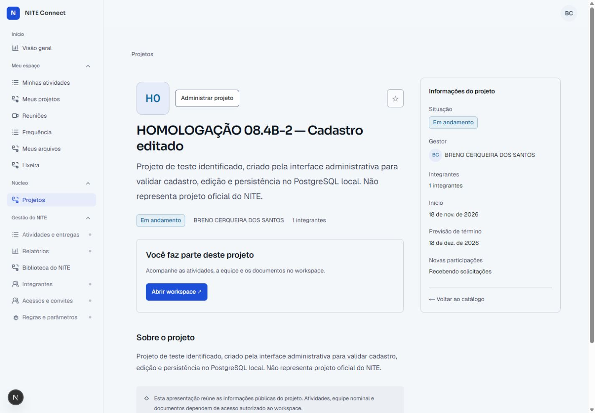
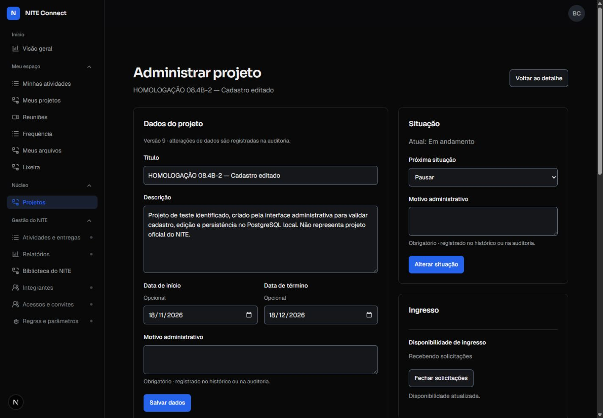
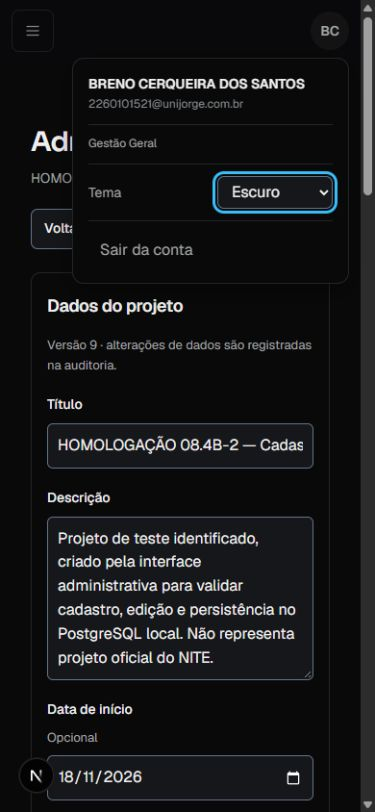
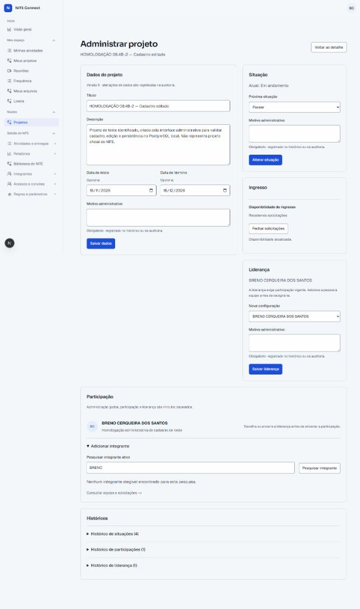
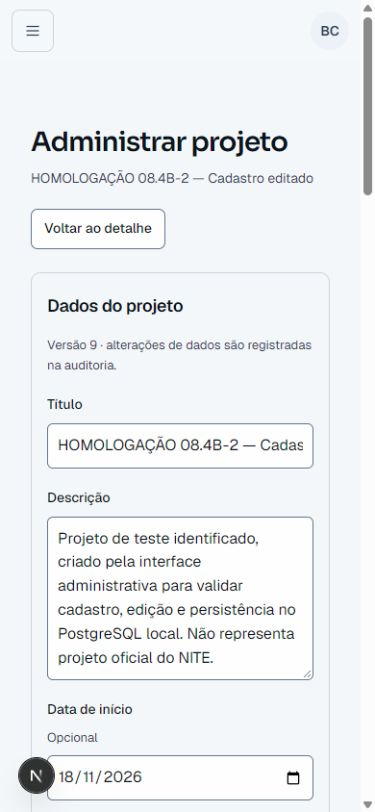
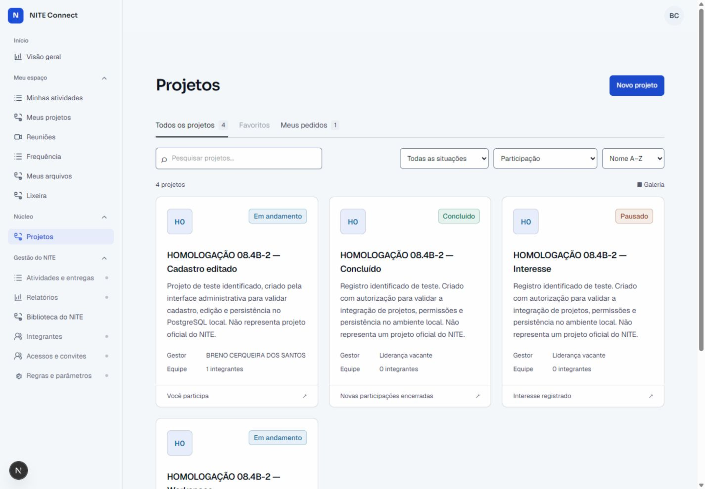
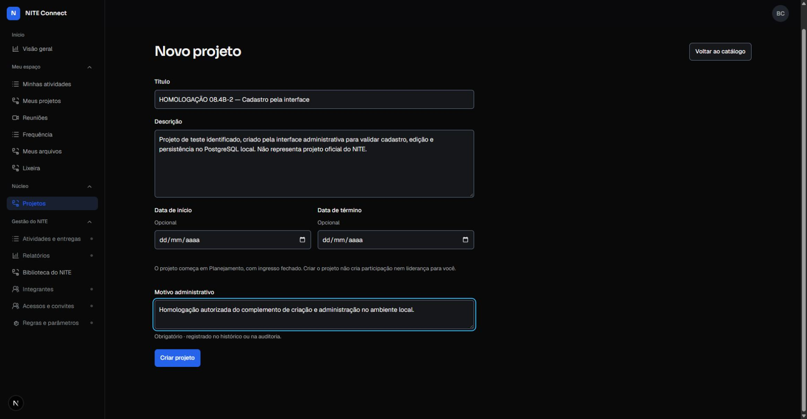
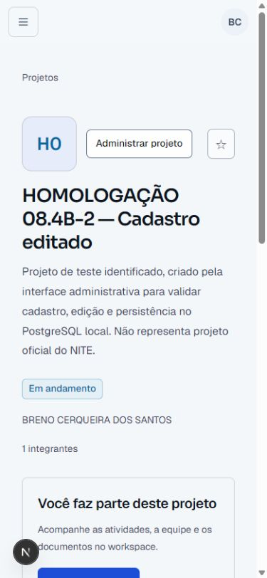
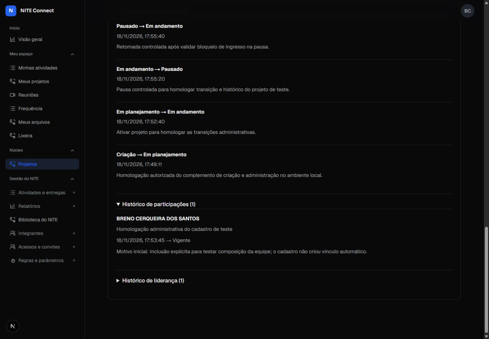
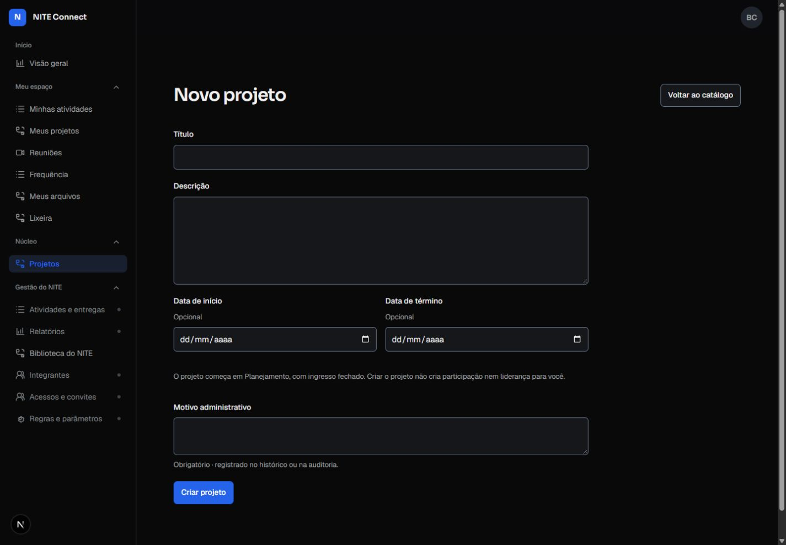
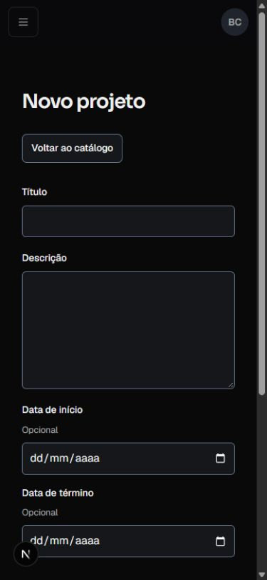
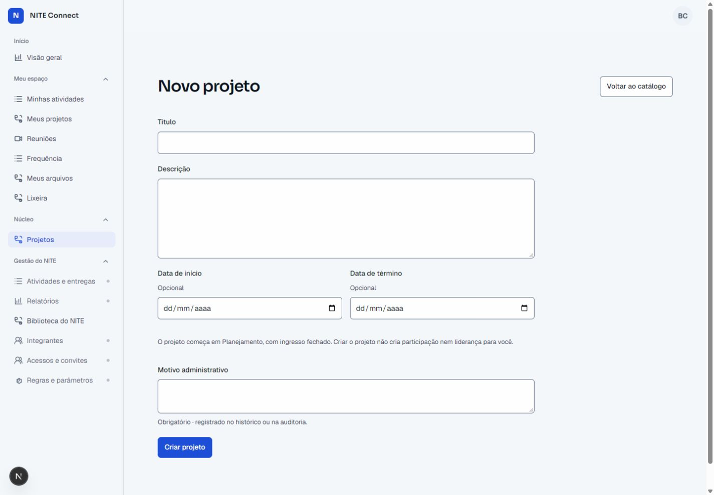
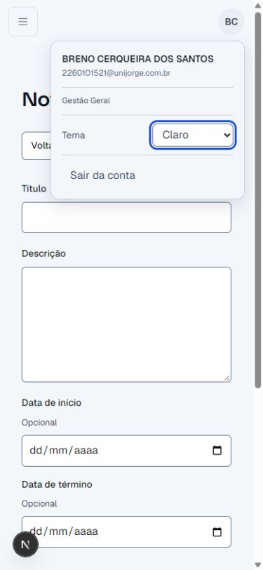
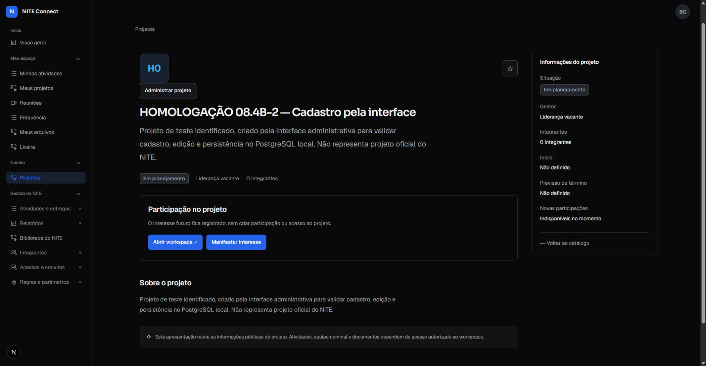